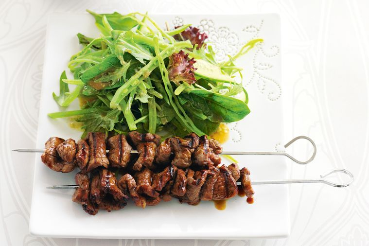

←
Teriyaki beef skewers with snow pea salad

Description
Teriyaki sauce gives a Japanese twist to these tasty beef skewers.
Ingredients
- 650g rump beef steak, thinly sliced
- 1/3 cup (80ml) teriyaki sauce
- 250g snow peas, halved lengthways
- 1 Lebanese cucumber, thinly sliced
- 50g mixed baby salad leaves (mesclun)
- 2 cups (400g) jasmine rice
- 1 teaspoon sesame oil
- 1 tablespoon rice vinegar
- 1 tablespoon mirin (sweet Japanese rice wine)
- 1 tablespoon light soy sauce
- 1-2 teaspoons wasabi paste, to taste
- 1 teaspoon caster sugar
Steps
- Thread beef on 8 metal or soaked bamboo skewers, folding each slice in half as you go. Place in a shallow dish and pour over teriyaki sauce. Marinate for 5 minutes.
- Meanwhile, cook peas in lightly salted boiling water for 1 minute until just tender. Drain and refresh in cold water. Place in a bowl with cucumber and leaves. Whisk dressing ingredients together, then toss with salad.
- Heat a chargrill pan on medium-high. Remove skewers from marinade and cook for 2 minutes each side until charred and cooked through. Serve with salad and rice.